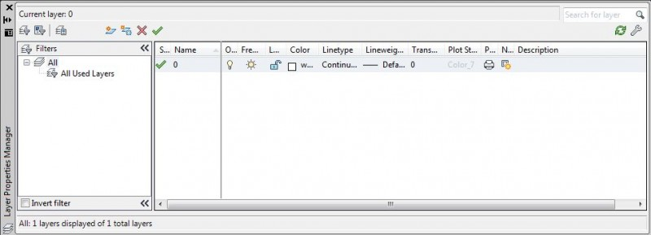
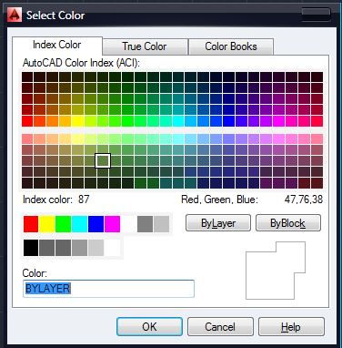
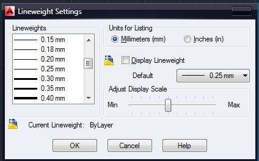
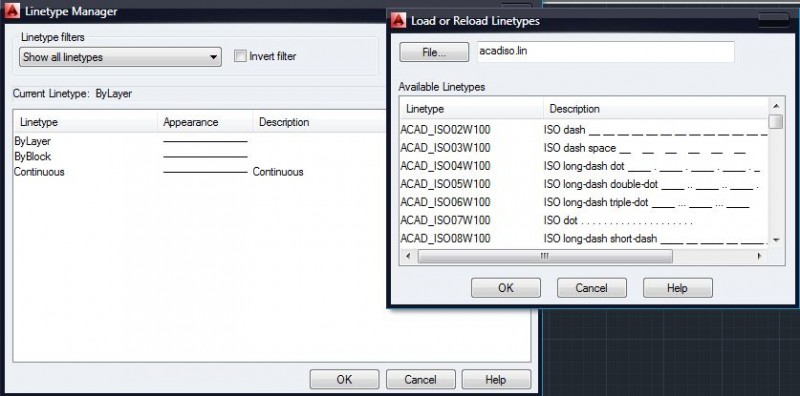

Лекция 9:Слои в AutoCAD
Создание сложных чертежей связано с размещением на чертеже большого количества графических примитивов, выполнением штриховки, нанесением размеров, размещением текста.
Каждый из этих объектов имеет определенные свойства: цвет, вес (толщину) линии, тип линий и т.д.
Назначение и использование слоев
Система автоматизированного проектирования AutoCad предоставляет в распоряжение пользователю инструмент — Layer (Слой), что позволяет компоновать объекты с однотипными свойствами вместе. Объекты различного типа целесообразно размещать на разных слоях. Каждый из графических примитивов наряду с другими свойствами имеет и такую??, как Layer — слой, которому он принадлежит. Слои можно представить как прозрачные кальки, на каждой из которых созданы те или иные элементы чертежа. При наложении они образуют сложный чертеж. Для объектов одного слоя можно задавать свойства глобально для всего слоя (ByLayer — по слою) и локально для отдельных объектов.
Слой также является объектом, поэтому имеет присущие ему свойства. Каждый чертеж автоматически содержит слой Layer 0. Его можно удалить, но можно изменить свойства. Создание других слоев возлагается на пользователя. Управление слоями осуществляется через диалоговое окно Layer Properties Manager, которое вызывается командой меню Format ? Layer или кнопками панели инструментов Layer.
Свойства слоев
В каждый момент времени текущим может быть только один слой. Чертежи новых графических примитивов происходит на текущем слое. Для выполнения редактирование объектов не обязательно, чтобы слой был текущим.
Список созданных слоев отображается в окне Layer Properties. Каждый из слоев имеет следующие свойства:
Имя ( Name ) Имя слоя. Щелкнув на имени, можно выбрать слой для определения его свойств или сделать его текущим.
Вкл .( On \ Off ) Включить \ выключить. Если выключить слой, то объекты, размещенные на нем, не отображаются на экране и не распечатываются. Их нельзя редактировать. Исключением является команда Erase ( All ).
Заморозить( Freeze \ Thaw ) Заморозить \ разморозить. Объекты замороженного слоя не отражаются ??на экране и не распечатываются. Их нельзя редактировать. Эта особенность имеет более высокий приоритет, нежели ВЫКЛ., замороженные слои со свойством ВЫКЛ. Не отображаются на экране.
Блокирован( Lock \ Unlock ) Заблокировать \ разблокировать. Объекты на заблокированных слоях остаются видимыми. Их можно распечатывать, но нельзя редактировать.
Цвет ( Color ) Цвет. Выбирается цвет объектов, принадлежащих данному слою.
( Linetype ) Тип линий
Штрихи( Lineweight ) Вес ( толщина) линий слоя.
Стиль печати Назначение стиля печати.
Печать Разрешается \ запрещается печатание слоя .
Создание слоя
Создать новый слой можно, нажав кнопку New Layer в диалоговом окне Layer Properties Manager. Имя нового слоя со стандартным именем Layer1 ( Layer2 … , LayerN ) появится в списке слоев. Сразу же можно переименовать слой. Имя не должно содержать более 256 символов, и в имени не допускаются пробелы. Имя слоя можно изменить, дважды щелкнув на нем мышью. Созданный слой будет иметь свойства: цвет White, тип линий Continuous и вес линий Default.
Свойства слоя можно изменить. Нажмите Детали и в нижней части диалогового окна появятся поля для выбора значений параметров.
Цвет слоя
Цвет выбирается в строке слоя, нажав мышку на поле Color. Появляется окно Select Color, в котором представлена палитра цветов. Другой способ выбрать цвет из списка на палитре Properties.
Вес (толщина ) линий слоя
Различные элементы чертежа при выводе на печать могут иметь разный вес линий.
Осуществить выбор необходимого значения можно в окне Lineweight style, что появляется при нажатии мыши в строке слоя на поле Lineweight или из списка с соответствующим именем на палитре Properties.
Тип линий слоя
Тип линий выбирается также двумя способами — нажатием мышки на соответствующем поле в строке слоя или из списка в палитре Properties. Если же нужный тип линий отсутствует, его нужно подгрузить. Для этого нажать в окне Select Linetype кнопку Open и в окне Load or Reload Linetype выберите нужные. Чтобы выбрать типы линий, содержащихся в списка в произвольном порядке, удерживайте нажатой клавишу Ctrl. Если же нужно выбрать типы линий, которые расположены рядом, зажмите клавишу Shift и нажмите мышь на имени первого и последнего типа. Затем нажмите ОК .
